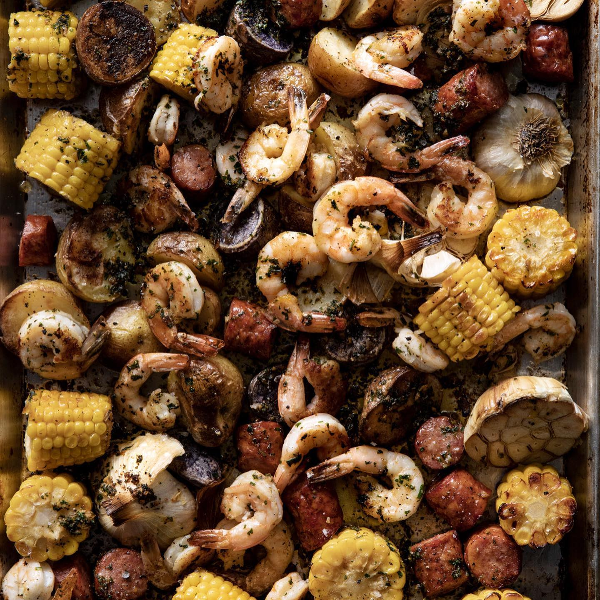

Cajun Shrimp

Description
Sheet pan dinner that includes potatoes, roasted garlic, corn on the cob and Shrimp
with a butter and old bay seasoning sprinkled on top.
Ingredients
- 1.5 pounds baby red or multicolored potatoes, halved
- 2 tablespoons olive oil
- 3/4 teaspoon kosher salt
- 4 ears corn, husked and cut crosswise into 1-inch rounds
Steps
- Preheat the over to 425°F. Line a sheet pan with foil.
- In a large bowl, combine the potatoes, 1 tablespoon of the olive oil, and 1/2 teaspoon
each of the salt and pepper. Stir to coat.